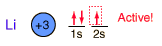

Lithium
Lithium, like the other alkali metals (Group I), is a sivery-white metal of very high chemical reactivity. It is less dense than water and will react actively with a water surface.
Compounds of lithium have been used in the manufacture of glass and of glazes for dishes and porcelain objects. It is used in lubricants, batteries and antidepressants.
Lithium finds use in nuclear breeder reactors as a coolant and a source for tritium. Tritium is formed by bombarding lithium with fast neutrons. If deuterium-tritium fusion becomes viable as an energy source, then the scarcity of lithium from which to breed tritium would become one of the limitations on the energy resource.
Lithium is contained in the silicate minerals elbaite, lepidolite, neptunite and bikitaite. Other lithium aluminum silicates are spodumene, LiAlSi2O9 and petalite, LiAlSi4O10.
Lithium is found in the phosphate minerals amblygonite and montebrasite.

|